iFit: plotting iData objects
Commands we use in this page:
plot, subplot, xlabel, xlim, title, saveas,
methods
The
iData objects can be plotted. They then
show the
Signal, usually
divided by the
Monitor, as a
function of the defined
Axes
(or default ones when not defined). A way to plot the raw
Signal is to set the
Monitor to 1.
Plotting objects in a
single pane (plot)
The main plot method for iData objects is plot. It works
for objects up to ndims(a)<=3.
Further
dimensionality
objects
may
be
visualized
by
means
of
projections
and
slices,
as
seen
below.
The
quantity
which
appears
onto
plots
is
the
Signal/Monitor.
In
order
to
vizualize the raw Signal, set
Monitor to 1 with e.g.
>> a=load(iData, [ ifitpath 'Data/sv1850.scn' ])
>> plot(a)
>> old_mon=getalias(a,'Monitor'); % save the current Monitor alias if you wish to restore it afterwards
>> setalias(a,'Monitor',1);
>> figure; plot(a)
The plot windows offer 'camera ready' quality rendering using openGL.
Standard tools are available zoom, edit, pan, export image, rotate,
explore data points with a cursor, customize colors, ...
The plot style can be tuned to mesh, contour, line, scatter, surface,
volumes, waterfall, ...
Plots for 1D objects
Let us import a simple 1D (vector Signal=f(x)
) data set into an iData object, and
plot it:
>> a=load(iData, [ ifitpath 'Data/sv1850.scn' ])
>> plot(a);
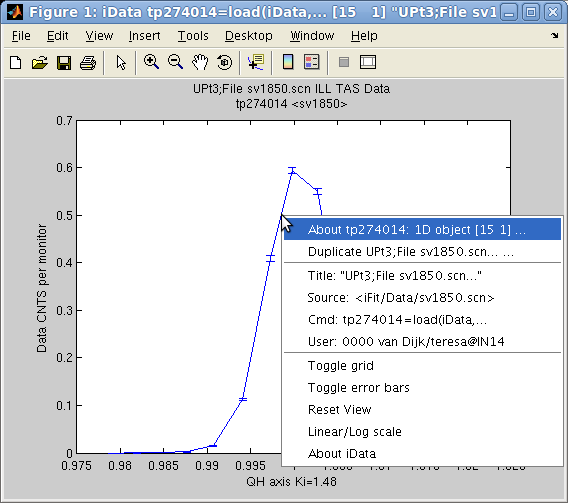 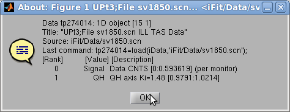
A standard Matlab figure appears, with the Signal and the Axis of rank 1. The curve itself
can be right-cliked in order to pop-up a contextual menu which provides
(see left image):
- an information dialog about the object (see right image above) and
the iFit/iData library version,
- the possibility to duplicate the view into an other window,
- simple ways to toggle a grid and error bar display,
- simple way to toggle linear or log scale for the Signal
- a 'Reset view' item to
re-plot the initial object view.
Tip: in case the contextual
menu item linear/log toggle does not satisfy your expectations, you may
try to directly plot the log of the object with (see Math operators)
>> plot( log10(a) );
As for any Matlab window, it may be edited using the arrow tool 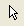which
allows
to
double-click
the
labels,
title,
the
axes
and
the
curve
in
order
to
change
e.g.
the
fonts,
the
text
to
show,
the
colors.
The zoom tool is also pretty useful (hey
?). To revert to the full view, double click on the figure, or select
the contextual menu item 'Reset view'.
The Matlab documentation about Graphics/Plots
and
Plotting
Tools/Figures,
Plots,
and
Graphs provides a full
description of all the tools available in Matlab plot windows. Most of
the functionality can also be accessed from the Figure menus. We
encourage you to read all this, especially late at night in winter.
Additional arguments can be given to plot in order to specify the line
style and color, such as in the standard Matlab plot function, e.g. plot(a,'r--') to draw a red dashed
line. The special style 'hide_errorbars'
will not show error bars, but they can be made visible from the
contextual menu. The h=plot(...)
function
returns a Matlab graphics handle (this is usually a number). It may be
used to perform further access and modification to the view.
Plots for 2D objects
Similarly
as
for 1D objects, plots can be generated for 2D objects Signal=f(x,y), and show them up as
surfaces:
>> a=load(iData, [ ifitpath 'Data/ILL_D10.dat' ])
>> plot(a);
which results in a surface plot as shown aside.
") Plot 2D:
Plot 2D: plot(a) with smooth
view
Alternate rendering can be obtained with the plot options:
>> a=iData(peaks);
>> plot(a); % a surface, same as surf(a)
>> plot(a,'mesh'); % a wired mesh, same as mesh(a)
>> plot(a,'contour'); % contour plot, same as contour(a)
>> plot(a,'contourf');% contour plot with filled regions, same as contourf(a)
>> plot(a,'surfc'); % a surface with contour plot below, same as surfc(a)
>> plot(a,'surfl'); % a surface with light, same as surfl(a)
>> plot(a,'plot3'); % a surface made of lines side by side, same as plot3(a)
>> plot(a,'scatter3');% a surface made of colored points, same as scatter3(a)
>> plot(a,'waterfall');% a surface made of colored points, same as waterfall(a)
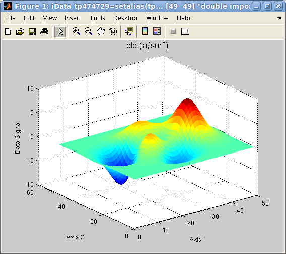
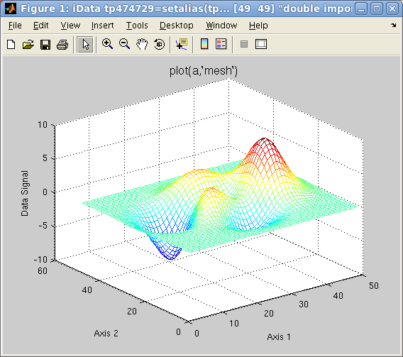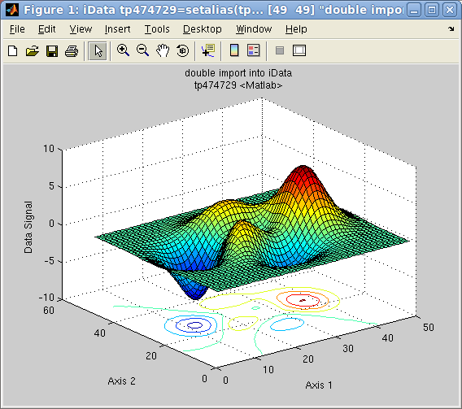
Plot 2D: left=plot(a),
center=plot(a,'mesh'),
right=plot(a,'surfc')
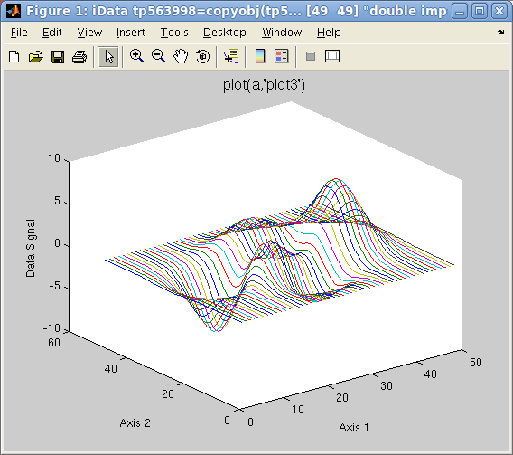
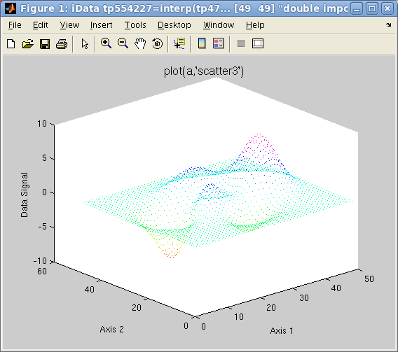
Plot 2D: left=plot(a,'plot3'),
right=plot(a,'scatter3')
Other plot types can be requested with keywords in the second argument
to plot:
- contour3 (a countour in 3D)
- surfl (surface with light)
- pcolor (a flat matrix/image
view, may be advantageously coupled with the hide_axis option)
- stem3 (single points which
show elevation from basal plane)
Data shown as an
image (flat)
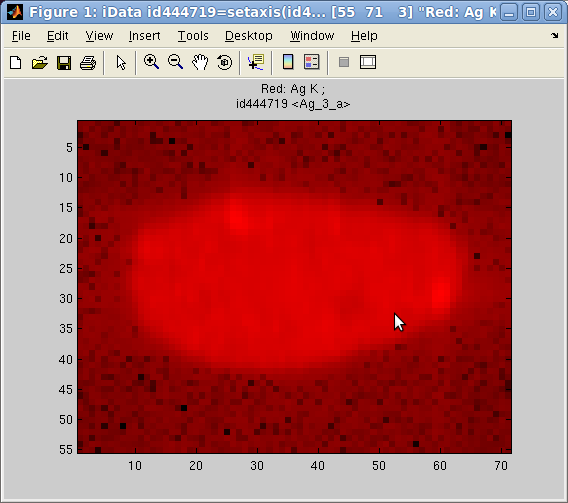In
addition,
the image(r,g,b)
plotting
method allows to send up to 3 objects onto the RGB color channels, and
display them as a flat image (when using option='hide_axis')
:
>> a = iData([ ifitpath 'Data/Ag_3_a.edf' ])
>> h = pcolor(a); % full color image
>> h = image(log(a), 'hide_axes'); % red channel image
>> h = image([], a, 'hide_axes'); % green channel image
>> h = image([],[], a, 'hide_axes'); % blue channel image
Some of the RGB channels can be left empty to suppress one color. Each
object is re-scaled in the [0 1] range to use the full channel colors.
However, when using the option
'norm' keyword, the scaling is made global to all images,
enabling comparison of relative intensity between channel contents.
An other possibility to supperpose different contributions with separated colors is to use the colormap method below.
Mapping an object
onto a surface (CData)
When a surface has been already plotted, either from the Matlab
standard surf or the iData plotting methods presented above, the color
shown on surfaces are usuyally the value of the data itself.
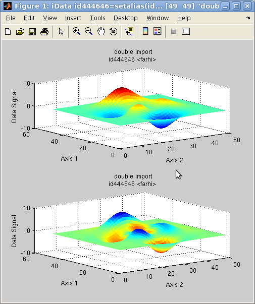It
is
possible
to map the values of any iData object onto a surface. When
the iData object does not match the surface dimensions, a rescaling is
automatically performed. This is achieved with the caxis method.
In the following example, we plot a surface, and then map the colors
shown on that surface (aka CData) with the Laplacian of the surface
(curvature):
>> a = iData(peaks);
>> h = subplot([ a a ]);
>> caxis(del2(a),h(2)); % we map the Laplacian onto the second plot
The initial object is shown in the upper panel, whereas the re-mapped
object is shown below. The blue regions indicate a negative curvature
(top of hills), and the red ones indicate a positive curvature (bottom
of hills).
Having separate colors in plot of arrays
It is possible to associate one colormap (that is a set of colors glued
onto a surface) for each object displayed in a same coordinate
frame/window. The colormap
function should then be used. It supports the same options as plot, but
colormaps can be specified in the list of arguments. When ommitted, a
set of predefined colormaps is chosen for each object.
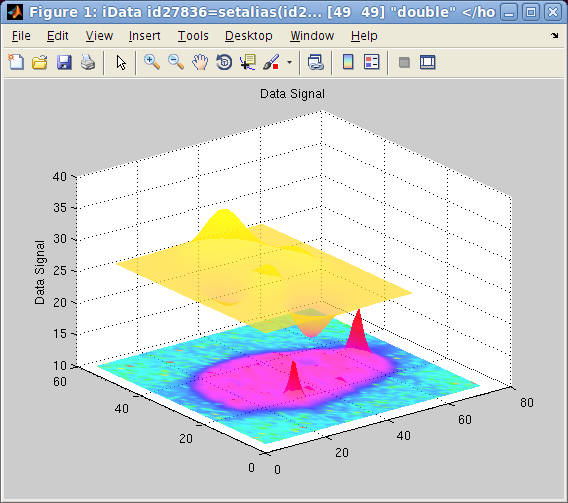
This plotting method is particularly pretty looking when using the 'shifted'
option, which then separate objects one from the other so that they can
be well identified on the figure. Choosing colormaps which are well
separated in color scales allow to visualize different contributions,
just like the image plotting method.
>> a = iData([ ifitpath 'Data/Ag_3_a.edf' ]);
>> b = iData(peaks);
>> colormap(a/10000,hsv,b,spring,'shifted transparent interp');
The first object is set to scale, and plotted with the hsv color
set. The second object is
shown with the spring color set. Adding the 'log' keyword to the options will use the log of the signal for the color scale, in order to enhance low signals.
Contextual menu
It is possible, by
right-clicking on the surface or the axis lines, to pop-up a contextual
menu which
provides the following operations:
- an information dialog about the object (see right image above) and
the iFit/iData library version,
- the possibility to duplicate the view into an other window,
- simple way to toggle a grid
- the possibility to smooth the surface appearance, add light and
make it semi-transparent,
- simple way to toggle linear or log scale for the Signal
- simple way to toggle a perspective rendering
- a 'Reset view' item to
re-plot the initial object view.
In addition to the edit and zoom tools ,
a rotate view tool enables to change the
view-point.
NOTE: as
explained in the iData axis
definition, the axis of rank 1 is usually assigned to the 'Y'
label, and the axis of rank 2 to 'X'.
Plots for 3D objects
Objects that contain volumetric data Signal=f(x,y,z)
can also be displayed as iso-surfaces or semi-transparent volumes, such
as in the following example:
>> [x,y,z,v]=flow; c=iData(x,y,z,v); ;
>> plot(c);
The default plotting method used is an isosurface using an optimal
signal value. Other rendering can be plotted with e.g.:
>> plot(c,'surf median'); % plots the c=median(signal) isosurface, same as plot(d) [default]
>> plot(c,'surf mean'); % plots the c=mean(signal) isosurface
>> plot(c,'surf half'); % plots the c=(max-min)/2 isosurface
>> plot(c,'plot3'); % plots a volume rendering with semi-transparent style, same as plot3(c)
>> plot(c,'scatter3'); % a set of colored points in space, same as scatter3(c)
>> plot(c,'waterfall'); % a set of colored points in space, same as contourf(c) and waterfall(c)
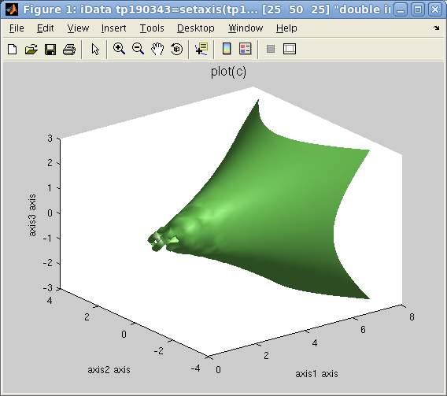
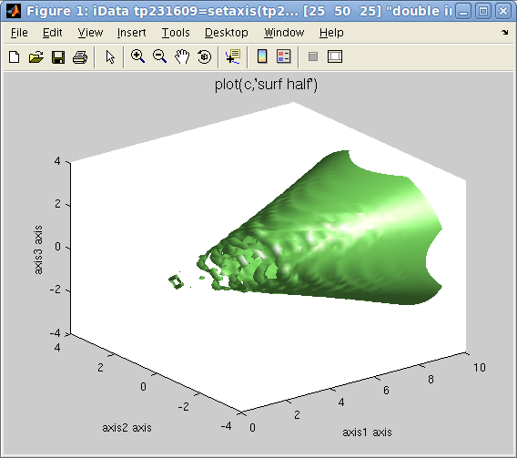
Plot 3D: left=plot(d,'surf')
, right=plot(d,'surf half')
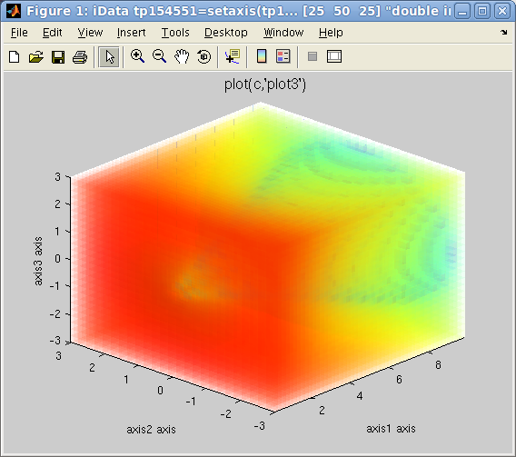
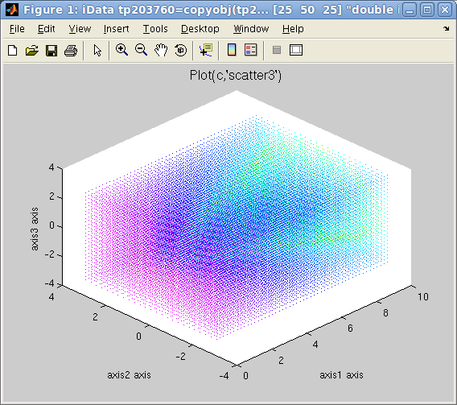
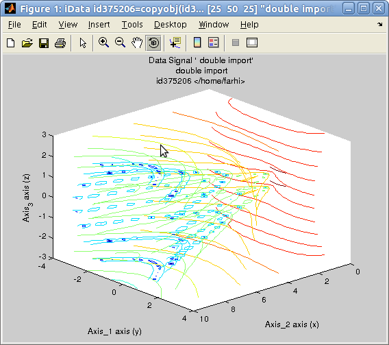
left=plot(d,'plot3')
, center=plot(d,'scatter3'),
right plot(d, 'waterfall')
It is possible, by
right-clicking on the surface or the axis lines, to pop-up a contextual
menu which
provides the following operations:
- an information dialog about the object (see right image above) and
the iFit/iData library version,
- the possibility to duplicate the view into an other window,
- simple way to toggle a grid
- the possibility to smooth the surface appearance, add light and
make it semi-transparent,
- simple way to toggle linear or log scale for the Signal
- simple way to toggle a perspective rendering
- a 'Reset view' item to
re-plot the initial object view.
In addition to the edit and zoom tools ,
a rotate view tool enables to change the
view-point.
Last but not least the Slice-o-matic
viewer for 3D volumetric data set is requested upon command:
>> slice(c) % with ndims(c)=3
Slices and isosurfaces can be viewer with an interactive tool (see below).
NOTE: as
explained in the iData axis
definition, the axis of rank 1 is usually assigned to the 'Y'
label, and the axis of rank 2 to 'X'.
Options for 2D and 3D
objects
The 2D ans 3D rendering may be customized by mean of keywords added to
the second argument to the plot function call, as follows:
- flat, interp, faceted:
affects
the
type
of
shading
used
(see
help
shading).
- transparent, light:
adds
transparency
(see
help alpha),
and
add some light(see help light).
- clabel: requests a
labeling of contours, by value (see help
clabel)
- axis tight, axis auto:
sets
plot
axis
limits
tight
around
the
object,
or
automatically
optimized
(see
help axis)
- view2, view3:
displays 2D/3D views from top or oblique view
- painters (bitmap
drawing), zbuffer
(vectorial drawing): selects the Matlab painters for rendering.
- hide_axes hides
XYZ axes and labels, but retains the Title
- shifted for
overlayed plots makes sure plots are regularly shifted on the Z axis
for better shifted overlayed rendering.
A usage examples is
>> plot(a,'surf interp view2 axis tight transparent')
Plotting an object
array
in a single plot
Overlayed plot
All plot functions can be overlay-ed with the usual hold on Matlab
command. However, the iData methods provide an integrated way to plot
an array of objects onto the same figure, such as in the following
example:
>> x=-pi:0.01:pi; a=iData(x,x);
>> a.Error=0; % replace default Error=sqrt(Signal) by no-error.
>> b=sin(a); c=cos(a); d=exp(-a.*a); % create new objects by applying operator on the initial linear one
>> plot([a b c d]); % overlay all objects
This can also be applied to 2D and 3D objects, even though the latter
usually produces a crowded plot.
>> [x,y,z]=peaks; a=iData(x,y*10,z);
>> c=linspace(a,-a+50,10); % continuously go from 'a' to a '-a+50' in 10 steps
>> plot(c); % plot all on the same figure
which overlays a set of objects, as shown below with a chosen view
angle.
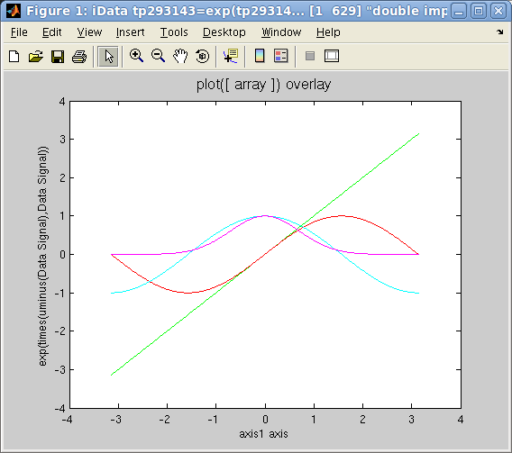 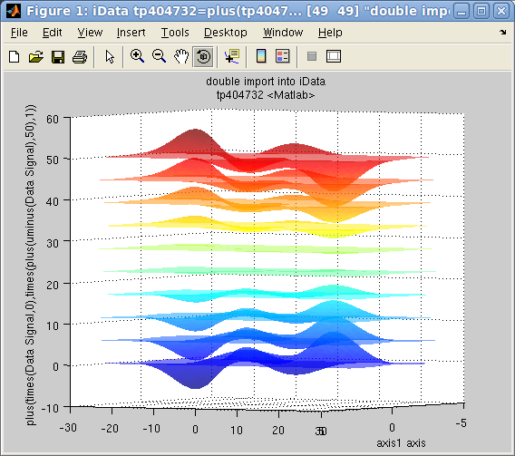
Plot
overlay: plot([ array ]):
left=1D, right=2D
Any array of objects can be plotted, including object mix with
dimensionalities 1, 2 or 3.
Side by side
plotting: Single objects and Catenated objects (waterfall)
A common way to plot a set of 1D curves which depend on a parameter is
to plot them side by side (waterfall style), so as to form a surface.
Let us build an
array of 1D objects and assign it an additional axis.
>> x=-pi:0.01:pi; a=iData(x,x);
>> a.Error=0; % replace default Error=sqrt(Signal) by no-error.
>> b=sin(a); c=cos(a); d=exp(-a.*a); % create new objects by applying operator on the initial linear one
The objects we have defined are 1D objects. In order to have them
appear in a 2D coordinate frame, one way is to simply assign a new axis
to each object, and then display them as a surface:
>> a{2}=1; b{2}=1.5; c{2}=3; d{2}=5; % assign a new 2D axis single value to each 1D objects
>> plot([a b c d],'surf'); % plot all as a set of lines side by side
>> waterfall([a b c d]) % same as above
>> surf([a b c d]
If the X axis (rank 2) has not been defined, the index of the objects
in the array is used. The surf method
'surf' and
'scatter3'
methods are here
equivalen
t (colored lines),
whereas
'plot3' and
'waterfall' draw simple
lines.
An other way to achieve a similar result is to assemble the 1D objects
into a 2D object, and then define the new axis values:
>> e=cat(2, [a b c d]); % catenate 1D objects into a 2D object along 2nd axis
>> e{2} = [ 1 1.5 3 5 ]; % assign 2nd axis values in one go
>> plot(e,'mesh'); % plot
which has the advantage that the new axis is directly assigned to a
vector, instead of independent single values.
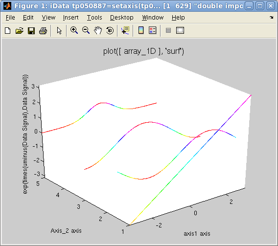
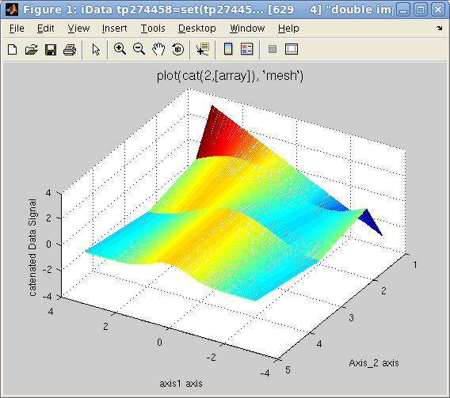
Plots side by side: left=separated
plots, right=catenated objects
Plotting object
array in a set of panes (multiple-plots aka subplot)
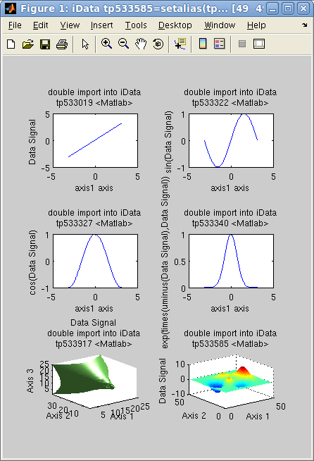In
case
one
wishes
to
display
a
number
of
objects
into
tiled
independent
coordinate
frames,
all
gathered
into
the
same
window,
the
subplot
function
can be used the same way as with the overlay
method shown above.
>> x=-pi:0.01:pi; a=iData(x,x); a.Error=0; % replace default Error=sqrt(Signal) by no-error.
>> b=sin(a); c=cos(a); d=exp(-a.*a); % create new objects by applying operator on the initial linear one
>> e=iData(flow); f=iData(peaks); % create 2D and 3D objects
>> subplot([a b c d e f]); % plot all into a set of separate frames
The number of tiles is automatically set to a sensible arrangement but
can be set by hand by giving an additional [m n] vector of tile dimensions.
>> subplot([a b c d e f], [ 2 3 ]);
Additional arguments can also be given to customize the type of plot rendering:
>> subplot([a b c d e f], 'mesh tight');
>> subplot([a b c d e f], [2 3], 'surf light');
Plotting projections
and slices
Portions of an object can equally be displayed with plot and subplot.
Plotting projections
The integration operators sum,
camproj and trapz can
be used to produce data projections.
The sum computes the raw
serial sum of the signal along a given dimension. The trapz trapezoidal integration
computes the same, but takes additionally into account the axes values.
Finally, the camproj does the
same as sum, but on all other axes than the one specified. In this
respect, camproj always
produces a 1D vector which is the projection of the object on the
selected dimension.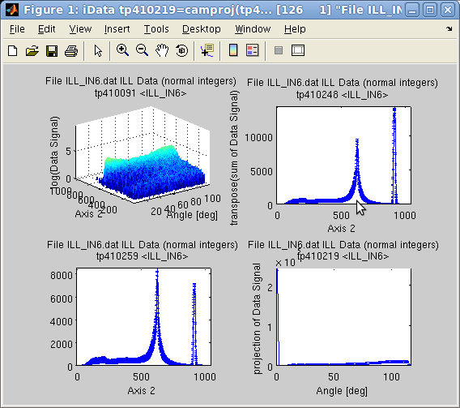
On a 2D object sum(a,1) is
the same as camproj(a,2) and sum(a,2) is camproj(a,1).
>> a=iData([ ifitpath 'Data/ILL_IN6.dat' ]); % import data
>> setalias(a, 'Angles', 'Data.FFFFFFFFFFFFFFFFFFFFFFFFFFFFFF_7(32:371)','Angle [deg]');
>> a{1} = 'Angles'; % define the angular axis
>> xlabel(a,'Time channel');
>> setalias(a, 'Wavelength','Data.FFFFFFFFFFFFFFFFFFFFFFFFFFFFF_10(21)','Neutron wavelength [Angs]');
>> setalias(a, 'ElasticChannel','Data.FFFFFFFFFFFFFFFFFFFFFFFFFFFFF_10(9)','Elastic channel position [ch]');
>> setalias(a, 'ChannelWidth','Data.FFFFFFFFFFFFFFFFFFFFFFFFFFFFF_10(18)','Channel time width [um]');
>> setalias(a, 'LSD','Data.FFFFFFFFFFFFFFFFFFFFFFFFFFFFF_10(27)','Sample-Detector Distance [m]');
>> subplot([ log(a) sum(a) trapz(a) camproj(a) ],'axis tight');
Plotting slices
Data slices and subsets can be obtained by selecting subspaces from
their
corresponding indices.
>> a=iData([ ifitpath 'Data/ILL_IN6.dat' ]);
>> plot(a(:,622)); % extract the object made from channel 622 on second axis, with all columns
The sliceomatic viewer is
displayed for 3D objects with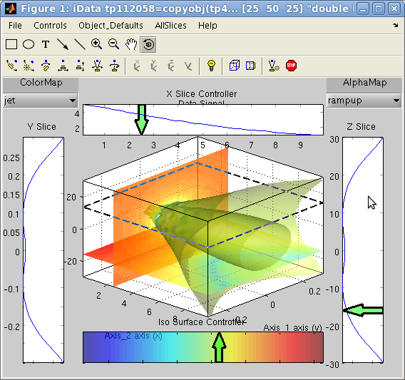
>> a=iData(flow);
>> slice(a)
Setting plot options:
title, axes labels, axes limits
Even though it is possible to set the labels on a Matlab figure with
the title xlabel ylabel zlabel
functions, it is possible to store that information into the object, so
that further plots show it. It is also possible to extract portions of
an object by specifying the axes limits.
Setting labels, title
To set the Signal label, use
>> title(a, 'a new Signal label')
which is different from the object title a.Title which holds the name of the
whole data set, independently of the assigned Signal in the Data. Also,
the object may be assigned a global label a.Label which may be used e.g. to
store object categories (background, calibration, with sample, ...).
The Signal label can be obtained with
>> title(a)
>> label(a,0)
>> label(a,'Signal')
Similarly, the axes can be assigned labels with
>> xlabel(a, 'a new X axis label'); % second axis (columns) ,or 1st axis for 1D objects
>> ylabel(a, 'a new Y axis label'); % first axis (rows)
>> zlabel(a, 'a new Z axis label'); % third axis
>> clabel(a, 'a new C axis label'); % fourth axis
>> label(a, rank, 'a new axis label for rank'); % any axis of given rank=1, 2, 3, ..., 0 for signal
All of these will be shown upon call to plot(a). The values can be obtained
with e.g
>> xlabel(a)
>> label(a, rank)
>> ...
Setting axes limits
It is possible to select a subregion of an object by specifying limits
among the axes. The resulting object does not hold the outer limits
data anymore.
>> xlim(a,[xmin xmax])
and similar functions ylim, zlim,
clim. Keep in mind that 'X' is along the second axis rank, and
'Y' is along the first.
In order to only affect the view, we rather recommend to use the
standard Matlab commands xlim([xmin xmax]) and similar ylim, zlim and clim.
Exporting plots as figures and
images
The figures can be exported from their File/Save as menu item. However, it
is possible to automate the export process by directly calling
>> saveas(a, filename, format)
where format may be jpg, png, pdf, HDF
...
All
formats
are
detailed
in
the Save page.
The getframe method generates a snapshot picture (thumbnail).
Importing plots as
iData objects
As seen in the Load documentation page, the
iData method can be used with graphical object including figure and
axis handle arguments.
>> a=iData(gcf);
E.
Farhi - iFit/iData plotting -
$Date: 2013-05-14 17:58:05 +0200 (Tue, 14 May 2013) $ $Revision: 1035 $
-
back to
Main
iFit
Page 
{kind=link}
{kind=link}
{kind=link}
{kind=link}
{kind=link}
{kind=link}
{kind=link}
{kind=link}
{kind=link}
{kind=link}
{kind=link}
{kind=link}
{kind=link}
{kind=link}